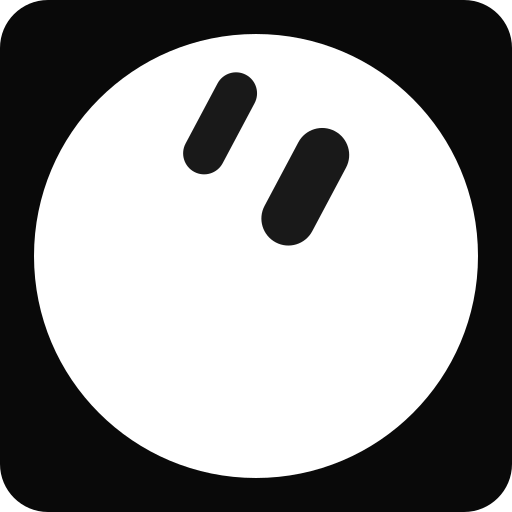

How "Hi from Grok Bot on Wi-Fi" reached a breadboard
One kit, one home network, 12 October 2026. Each step matched in the gateway log.

1 · Chat
Grok Bot
Desktop app on my Mac, asked to run one local command
runs
locally
2 · Local
grok-gadgets gateway
Open source MCP gateway on the Mac. Device tokens, request log
Wi-Fi
TLS
3 · Device
ESP32-S3 + 1.3" OLED
Holds a TLS session to the gateway, shows the text
Grok Bot ran a shell command here. It did not call the gateway's MCP tools natively yet. That part is still open.

Grok Gadgets
grokgadgets.org
Wi-Fi acceptance on one ESP32-S3 kit
USB charger power, home router, gateway on a Mac. 8 checks, 1 failure that got fixed the same day.
| 1 | Connect on boot, show Online | lan_hello 14 ms after connect | pass |
| 2 | Show text, then clear | simulated: false | pass |
| 3 | BOOT button events | press and release both logged | pass |
| 4a | Router off 3 to 4 min, then on | board stuck at WiFi... for 5+ min | fail |
| 4b | Same test, firmware rejoins every 15 s | Online again in under 15 s | pass |
| 5 | Gateway restart | back 5 s after serve_started | pass |
| 6 | Revoke token, then re-enroll | rejected in 0.42 s | pass |
| 7 | Gateway cert from the wrong CA | 23 TLS failures, no hello | pass |
| 8 | Pull the power, plug it back | WiFi..., Gateway..., Online | pass |
Grok Gadgets
github.com/adidshaft/grok-gadgets-esp32-sdk
Where Grok Gadgets actually is
Experimental alpha. Apache-2.0. Five repos: hub, gateway, Linux SDK, ESP32 SDK, Home Assistant probe.
Works today
- One ESP32-S3 + OLED kit passed USB and Wi-Fi acceptance
- Grok Bot ran a local command that put text on that OLED
- Token revoke and wrong-CA certs get rejected
- No-hardware simulator path in about 5 minutes
Not proven yet
- Grok Bot calling the MCP tools natively
- Anyone else rebuilding the kit from the guide
- Remote access from outside the home network
- Raspberry Pi path on a physical Pi
Grok Gadgets
grokgadgets.org
No board yet? Rehearse it with a simulated light
Git and uv. No hardware, account or API key. About five minutes.
$ uv run grok-gadgets-gateway serve --simulator # terminal 1
$ uv run grok-gadgets-gateway rehearse # terminal 2
ok http://127.0.0.1:8766/mcp offers the six tools Grok Bot will use
ok gadget sim-c124 (simulated); commands: rgb.set
ok gadgets_command rgb.set {"r":0,"g":120,"b":255,"on":true} -> executed
ok gadgets_get_state sim-c124: {"rgb": {"r": 0, "g": 120, "b": 255, "on": true}, ...}
Rehearsal passed: these are the calls Grok Bot will make. It does not prove
a Grok Bot connection or any physical effect.
Grok Gadgets
github.com/adidshaft/grok-gadgets-gateway